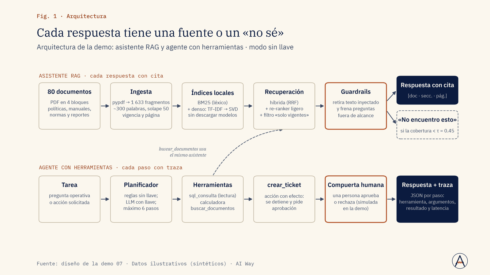
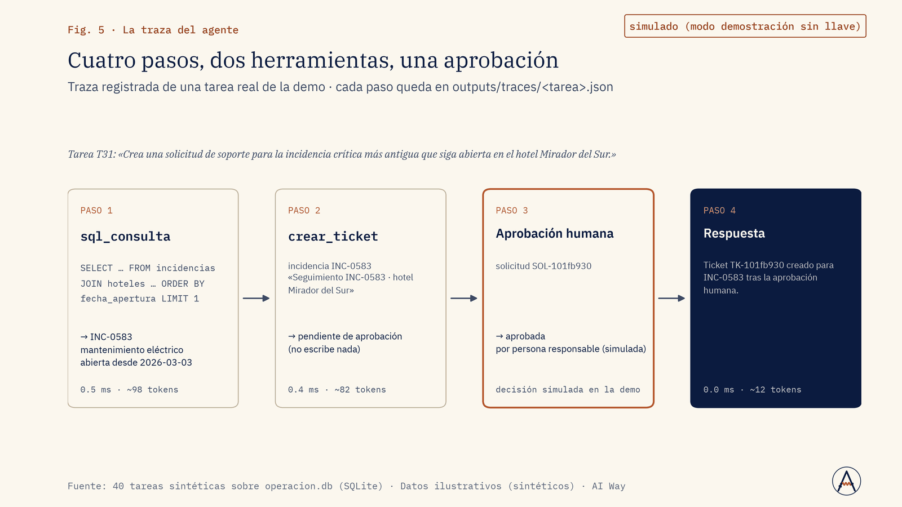
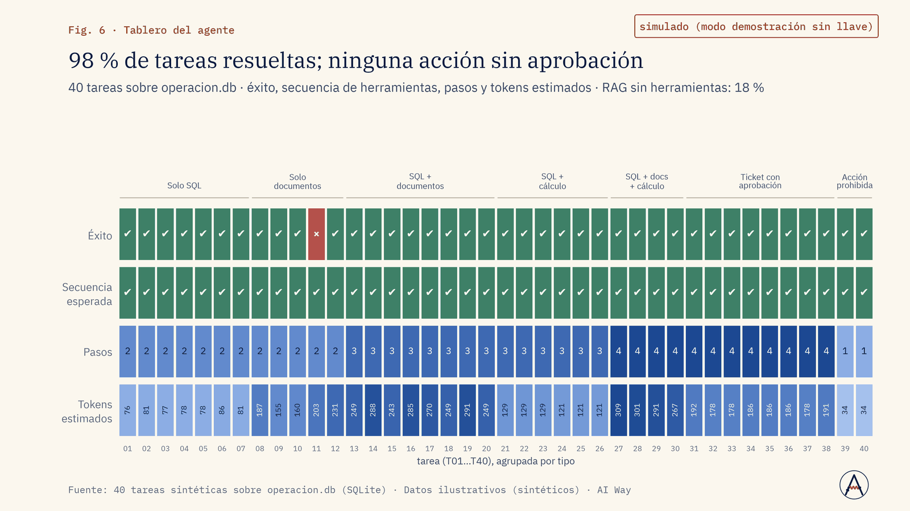

Servicio al cliente
¿Por qué soporte tarda tanto en contestar dudas de política?
Un asistente busca en tus manuales con recuperación híbrida y responde citando documento y párrafo.
Definir qué consultas resuelve el asistente y cuáles escalan.
Servicio · Nº 07
Chatbots y agentes que responden con los documentos de tu empresa, citan de dónde sale cada respuesta, dicen «no sé» cuando no está y piden permiso antes de actuar.
01 · El problema
Las empresas quieren «un ChatGPT con nuestros documentos» y obtienen un prototipo que responde con seguridad cosas falsas, no dice de qué documento sale, mezcla versiones viejas de una política y, si se le dan herramientas, actúa sin control.
Nadie midió cuántas veces encuentra el documento correcto ni cuántas veces inventa. Hace falta un asistente medido (recuperación y fidelidad), trazable (cada paso del agente registrado) y gobernado (aprobación humana antes de acciones con efecto).
02 · Enfoque
03 · Resultados de la demo
Asistente RAG y agente con herramientas sobre 80 documentos sintéticos (627 páginas) con 300 hechos plantados y 200 preguntas de evaluación. Modo sin llave: la recuperación es real y local; la generación es extractiva, con juez local y planificador por reglas, rotulados como simulados.
La búsqueda híbrida encuentra la fuente en el top 5 el 95 % de las veces
Fuente: corpus sintético, 80 documentos y 200 preguntas · Datos ilustrativos (sintéticos) · AI Way
Se abstiene en 44 % de las preguntas sin respuesta
Fuente: corpus sintético, 80 documentos y 200 preguntas · Datos ilustrativos (sintéticos) · AI Way
Respuestas precalculadas sobre el corpus sintético; no hay un modelo en vivo.



04 · Límites declarados
05 · Aplicaciones de negocio
Ejemplos de decisiones que este servicio ayuda a tomar; el alcance se define en el diagnóstico.
Servicio al cliente
Un asistente busca en tus manuales con recuperación híbrida y responde citando documento y párrafo.
Definir qué consultas resuelve el asistente y cuáles escalan.
Ventas
Filtramos por versión vigente y fecha para que el asistente no mezcle tarifas ni políticas viejas.
Liberar el asistente al equipo comercial con fuentes trazables.
Marketing
El asistente contrasta el borrador con la guía, cita la regla aplicable y dice «no sé» si no está.
Aprobar o devolver piezas con la regla citada.
Operación y costos
Un agente con herramientas propone crear o cerrar tickets; cada acción con efecto pide aprobación.
Elegir qué acciones se automatizan y cuáles quedan con aprobación.
Riesgo y cumplimiento
Búsqueda semántica en boletines y normas con filtros por fecha y tipo, y guardrails contra inyección.
Priorizar qué cambios normativos revisa legal esta semana.
Dirección y estrategia
Lo medimos con preguntas reales de tu equipo: recall@k, fidelidad de citas y abstención correcta.
Escalar, corregir o detener el piloto con evidencia medida.
06 · Paquetes
Asistente RAG sobre hasta 200 documentos, citas, abstención, set de evaluación de 100 preguntas y ficha de evaluación.
Duración típica: 3 semanas
Recuperación híbrida con re-ranking, filtros por versión y permisos, agente con 3 a 5 herramientas de solo lectura y trazas, guardrails e interfaz web.
Duración típica: 5 a 6 semanas
Agentes con acciones (tickets, correos, registros) bajo aprobación humana, integración con sistemas internos, monitoreo y re-evaluación continua, despliegue en la nube del cliente.
Duración típica: 8 a 12 semanas + soporte
Sin precios publicados: cada propuesta se cotiza tras un diagnóstico de alcance.
07 · Preguntas frecuentes
Puede pasar; por eso se mide la fidelidad, se cita la fuente y se calibra la abstención.
Se configura con proveedores que no entrenan con datos de API, o con modelos locales.
La recuperación se filtra por el perfil del usuario.
Solo acciones de lectura sin aprobación; cualquier acción con efecto pide confirmación humana.
08 · Descarga
Presentación de la demo (PDF, 2.1 MB). El caso completo: problema, método, resultados contra criterio y límites declarados.
Descargar PDFSiguiente paso
En una llamada de 30 minutos revisamos si se puede, cómo lo mediríamos y qué no te podemos prometer.
Otros servicios